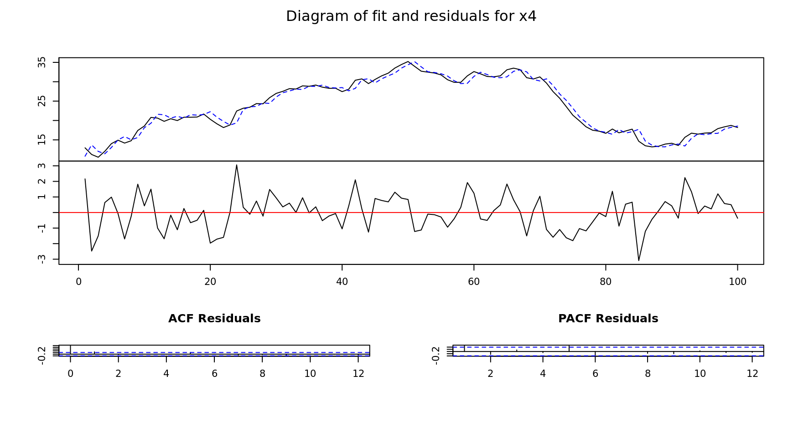
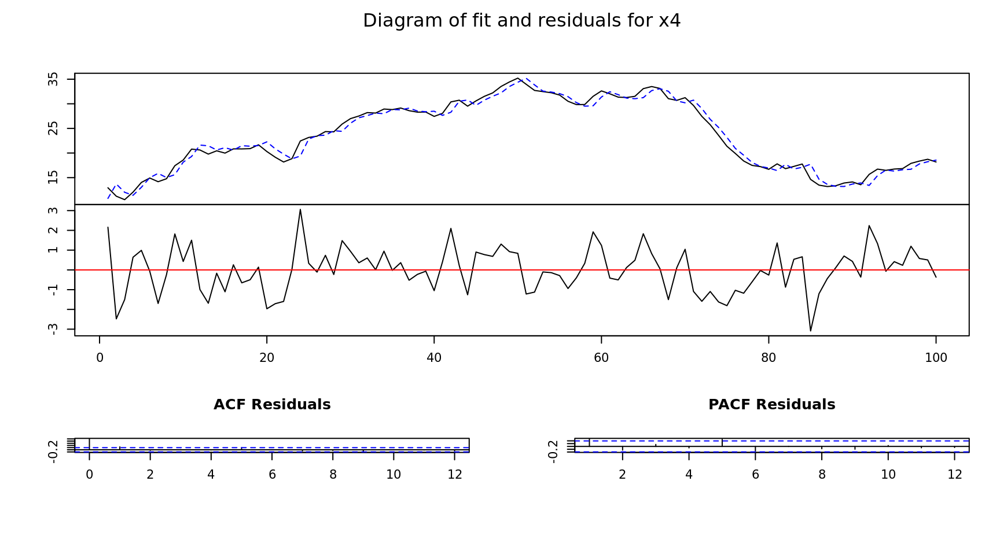
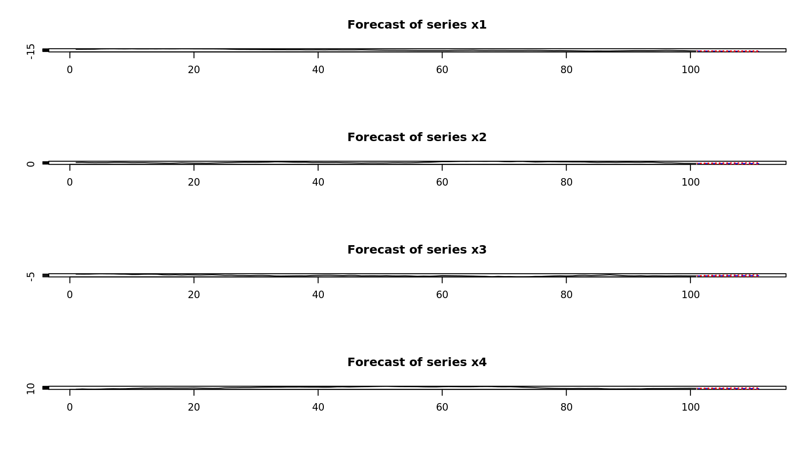

VAR Modeling
library(vars)
# Generated Time Series
x1 = 10 + arima.sim(n = 100,model = list(order = c(1, 1, 1), ar = .1, ma = .2))
x2 = 10 + arima.sim(n = 100,model = list(order = c(1, 1, 1), ar = .1, ma = .2))
x3 = 10 + arima.sim(n = 100,model = list(order = c(1, 1, 1), ar = .1, ma = .2))
x4 = 10 + arima.sim(n = 100,model = list(order = c(1, 1, 1), ar = .1, ma = .2))
# Combine into a multivariate time series
x = data.frame(x1, x2, x3, x4)
# Create a variable auto-regression modle
mdl = VAR(x)
# Model summary
summary(mdl)
VAR Estimation Results:
=========================
Endogenous variables: x1, x2, x3, x4
Deterministic variables: const
Sample size: 100
Log Likelihood: -550.481
Roots of the characteristic polynomial:
0.9705 0.9411 0.9183 0.799
Call:
VAR(y = x)
Estimation results for equation x1:
===================================
x1 = x1.l1 + x2.l1 + x3.l1 + x4.l1 + const
Estimate Std. Error t value Pr(>|t|)
x1.l1 0.852421 0.061182 13.933 <2e-16 ***
x2.l1 -0.053292 0.056565 -0.942 0.349
x3.l1 0.003780 0.030598 0.124 0.902
x4.l1 -0.003551 0.035589 -0.100 0.921
const 2.506815 1.444862 1.735 0.086 .
---
Signif. codes: 0 '***' 0.001 '**' 0.01 '*' 0.05 '.' 0.1 ' ' 1
Residual standard error: 1.035 on 95 degrees of freedom
Multiple R-Squared: 0.7241, Adjusted R-squared: 0.7124
F-statistic: 62.32 on 4 and 95 DF, p-value: < 2.2e-16
Estimation results for equation x2:
===================================
x2 = x1.l1 + x2.l1 + x3.l1 + x4.l1 + const
Estimate Std. Error t value Pr(>|t|)
x1.l1 -0.075582 0.053943 -1.401 0.164
x2.l1 0.881307 0.049873 17.671 <2e-16 ***
x3.l1 -0.006345 0.026978 -0.235 0.815
x4.l1 -0.008027 0.031378 -0.256 0.799
const 2.434378 1.273921 1.911 0.059 .
---
Signif. codes: 0 '***' 0.001 '**' 0.01 '*' 0.05 '.' 0.1 ' ' 1
Residual standard error: 0.9128 on 95 degrees of freedom
Multiple R-Squared: 0.8194, Adjusted R-squared: 0.8118
F-statistic: 107.8 on 4 and 95 DF, p-value: < 2.2e-16
Estimation results for equation x3:
===================================
x3 = x1.l1 + x2.l1 + x3.l1 + x4.l1 + const
Estimate Std. Error t value Pr(>|t|)
x1.l1 -0.07556 0.06403 -1.180 0.2409
x2.l1 -0.11611 0.05920 -1.961 0.0528 .
x3.l1 0.94696 0.03202 29.570 <2e-16 ***
x4.l1 -0.01750 0.03725 -0.470 0.6395
const 3.39618 1.51217 2.246 0.0270 *
---
Signif. codes: 0 '***' 0.001 '**' 0.01 '*' 0.05 '.' 0.1 ' ' 1
Residual standard error: 1.084 on 95 degrees of freedom
Multiple R-Squared: 0.947, Adjusted R-squared: 0.9448
F-statistic: 424.8 on 4 and 95 DF, p-value: < 2.2e-16
Estimation results for equation x4:
===================================
x4 = x1.l1 + x2.l1 + x3.l1 + x4.l1 + const
Estimate Std. Error t value Pr(>|t|)
x1.l1 -0.06413 0.05696 -1.126 0.263
x2.l1 0.04873 0.05267 0.925 0.357
x3.l1 -0.04077 0.02849 -1.431 0.156
x4.l1 0.94816 0.03314 28.614 <2e-16 ***
const 1.35853 1.34528 1.010 0.315
---
Signif. codes: 0 '***' 0.001 '**' 0.01 '*' 0.05 '.' 0.1 ' ' 1
Residual standard error: 0.9639 on 95 degrees of freedom
Multiple R-Squared: 0.945, Adjusted R-squared: 0.9426
F-statistic: 407.7 on 4 and 95 DF, p-value: < 2.2e-16
Covariance matrix of residuals:
x1 x2 x3 x4
x1 1.07184 -0.1290 0.08087 -0.1130
x2 -0.12900 0.8332 -0.18907 0.1310
x3 0.08087 -0.1891 1.17403 -0.1792
x4 -0.11305 0.1310 -0.17917 0.9292
Correlation matrix of residuals:
x1 x2 x3 x4
x1 1.00000 -0.1365 0.07209 -0.1133
x2 -0.13651 1.0000 -0.19117 0.1489
x3 0.07209 -0.1912 1.00000 -0.1715
x4 -0.11328 0.1489 -0.17155 1.0000

 

